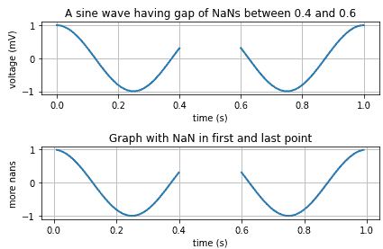
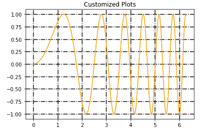

Matplotlib 网格
在本教程中，我们将介绍图中的网格是什么，以及如何使用 Matplotlib 中的grid()函数对其进行定制。
什么是网格？
在任何图表或任何数据集的图形表示中，制作网格是为了让您更好地理解整个图形/图表，并将绘图上的点与比例值相关联，因为背景中有网格线。网格使图形/图表的内部基本上由直线(垂直、水平和角度)或主要用于表示数据的曲线相交而成。
借助 matplotlib 中的网格，您可以更好地理解图形。
您可以很容易地获得数据点的参考。
matplotlib.pyplot.grid()是用来轻松创建网格的功能，你也可以自定义，因为有很多选项。
Matplotlib grid()函数
这个函数基本上用于创建网格。
在轴对象中，
grid()功能用于设置图形内网格的可见性。它可以开也可以关。线型和线宽属性可以在
grid()功能中设置。您可以根据自己的需求定制网格，因为有许多可用的选项。
Matplot lib grid()语法
下面我们有使用函数matplotlib.pyplot.grid()函数的基本语法:
matplotlib.pyplot.grid(b, which, axis, **kwargs)
让我们讨论一下这个函数中使用的参数:
b
该参数表示布尔值，用于指定是否显示网格线。该参数的默认值为真。
哪个
此参数用于指示需要应用更改的网格线。这个值有三个:主、次或两个。
* 轴**
此参数用于表示需要应用更改的轴。该值为 **x** 、 **y** 或两者。
* ****kwargs**
此参数用于指示可选的线属性。**
**## 示例 1
让我们看一个例子，我们将在图中创建一个网格:
import numpy as np
import matplotlib.pyplot as plt
t = np.arange(0.0, 1.0 + 0.01, 0.01)
s = np.cos(2 * 2*np.pi * t)
t[41:60] = np.nan
plt.subplot(2, 1, 1)
plt.plot(t, s, '-', lw=2)
plt.xlabel('time (s)')
plt.ylabel('voltage (mV)')
plt.title('A sine wave having gap of NaNs between 0.4 and 0.6')
plt.grid(True)
plt.subplot(2, 1, 2)
t[0] = np.nan
t[-1] = np.nan
plt.plot(t, s, '-', lw=2)
plt.title('Graph with NaN in first and last point')
plt.xlabel('time (s)')
plt.ylabel('more nans')
plt.grid(True)
plt.tight_layout()
plt.show()
上述代码片段的输出如下: 
在上面的函数中，我们所做的只是添加了plt.grid(True)，它显示了最终图形中的网格。
例 2
现在，在下面给出的示例中，我们将向您展示如何使用各种选项自定义图表:
import matplotlib.pyplot as plt
import numpy as np
x = np.linspace(0, 2 * np.pi, 400)
y = np.sin(x ** 2)
plt.plot(x, y, 'orange')
plt.title("Customized Plots")
# customize grids
plt.grid(True, color = "black", linewidth = "1.4", linestyle = "-.")
plt.show()
以上代码的输出如下:

在上图中，可以看到网格线是由 -。我们已经使用linestyle参数指定了，线的宽度被指定为 1.4 来控制线的宽度。我们还指定了地块颜色为橙色，可以在输出中看到。
总结:
grid()功能可用于在图形中制作更好的网格。您可以尝试网格线的不同样式、颜色和宽度，以使您的图形在视觉上更好。